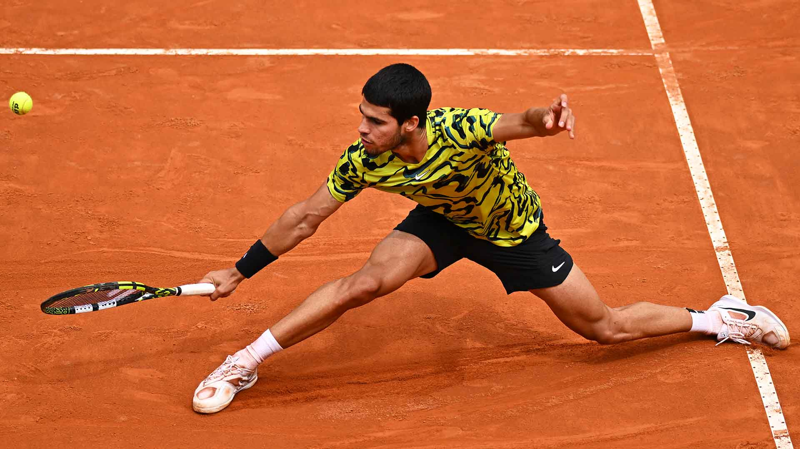
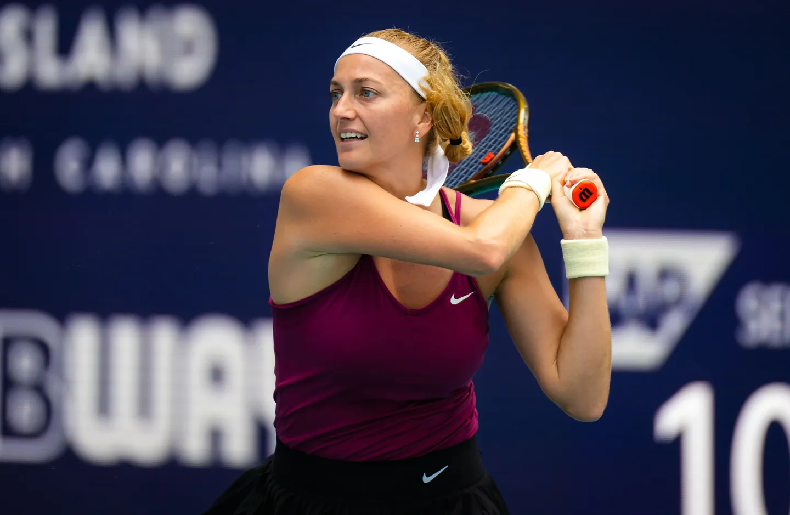
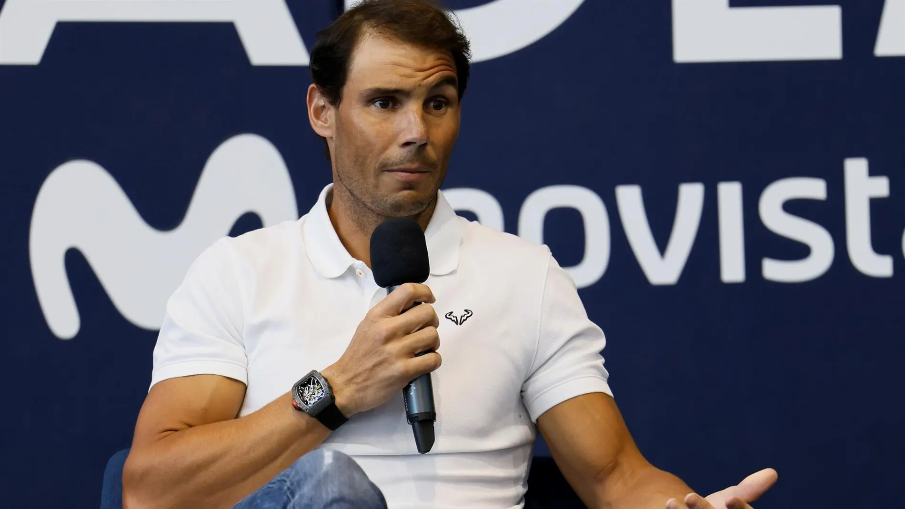
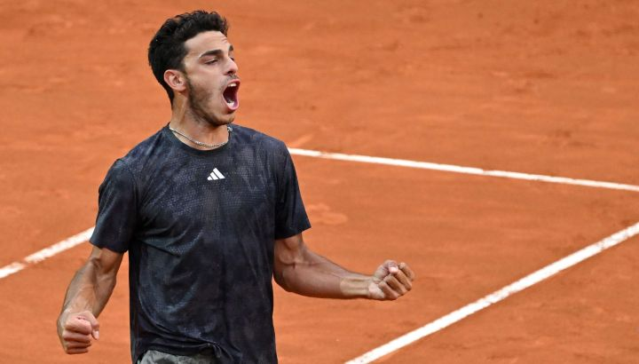
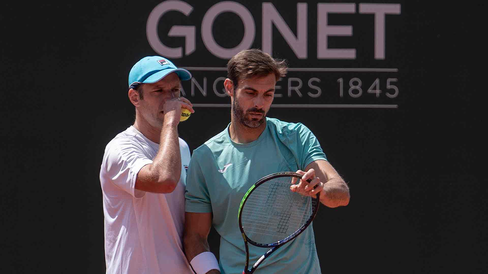

Carlos Alcaraz

El español Carlos Alcaraz, campeón del Masters 1000 de Madrid, se garantizó
el
retorno al número 1
del ranking mundial de tenis en la próxima actualización, previa al torneo de Roland Garros,
segundo
Grand Slam del año.
Alcaraz, segundo del escalafón, se acercó este lunes a sólo cinco puntos del serbio Novak
Djokovic,
quien sólo podrá aspirar a conservar las unidades acumuladas en el próximo Abierto de Roma por
ser
el campeón defensor.
Petra Kvitova, en la cima de Miami

La experimentada tenista checa Petra Kvitova (33 años) derrotó este sábado a Elena Rybakina (23
años)
por 7-6 (14) y 6-2, y se consagró campeona del Masters 1000 de Miami por primera vez en su
carrera.
De esta manera, Kvitova volvió a ganar un Masters 1000 después de cinco años, alcanzando su
trigésimo título WTA y evitando que Rybakina, campeona en marzo en Indian Wells, completara el
doblete de títulos conocido como el “Sunshine Double”.
Rafael Nadal es baja de Roland Garros

A punto de finalizar el Masters 1000 de Roma, los ojos del tenis se mudan a Roland Garros, el
segundo Grand Slam de la temporada que comenzará el 28 de mayo y verá a un nuevo campeón el 11
de
junio. La novedad del día fue que Rafael Nadal, defensor actual, no jugará el certamen y que se
retiraría del deporte en 2024.
Cerúndolo Alcanza En Lyon Su Tercera Final ATP Tour

El tenista argentino se clasificó hoy para su primera final del año y la tercera en su carrera,
esta
vez en el ATP 250 de Lyon, en Francia, tras aplastar en sets corridos al británico Cameron
Norrie
por 6-3 y 6-0.
Ahora irá en busca del título este sábado ante el francés Arthur Fils (112°), que en una
semifinal
muy peleada, pudo derrotar al estadounidense Brandon Nakashima (52°) en tres sets: 7-5, 4-6 y
7-6
(5).
Granollers Y Zeballos Jugarán Por El Título En Ginebra

Granollers y Zeballos, que partían como cabezas de serie No. 3, derrotaron en el partido que
abrió
la jornada de este viernes en Ginebra a los principales favoritos Marcelo Arévalo y Jean-Julien
Rojer por 6-4, 7-5 en una hora y 30 minutos.
En el partido por el título se enfrentarán a la dupla conformada por los cabezas de serie No. 4
Jaime Murray y Michael Venus, que llegan después de batir en semifinales a Simone Bolelli y
Fabrice
Martin por 6-1, 3-6, 10-6.